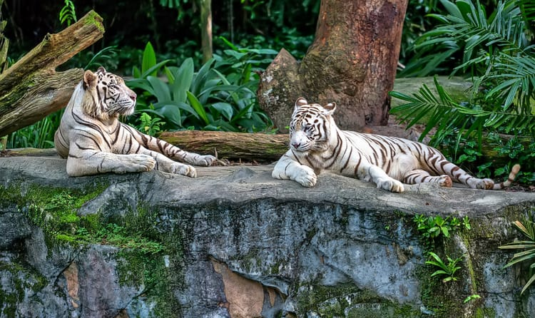

 The Singapore Botanic Gardens is a 160-year-old tropical garden located at the fringe of Singapore's Orchard Road shopping district. It is one of three gardens, and the only tropical garden, to be honoured as a UNESCO World Heritage Site. The Botanic Gardens has been ranked Asia's top park attraction since 2013, by TripAdvisor Travellers' Choice Awards. It was declared the inaugural Garden of the Year, International Garden Tourism Awards in 2012, and received Michelin's three-star rating in 2008. The Botanic Gardens was founded at its present site in 1859 by an agri-horticultural society. It played a pivotal role in the region's rubber trade boom in the early twentieth century, when its first scientific director Henry Nicholas Ridley, headed research into the plant's cultivation. By perfecting the technique of rubber extraction, still in use today, and promoting its economic value to planters in the region, rubber output expanded rapidly. At its height in the 1920s, the Malayan peninsula cornered half of the global latex production.
Singapore Page